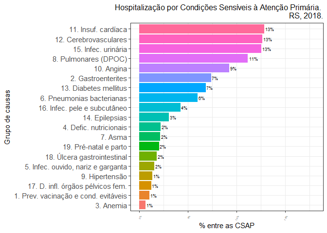
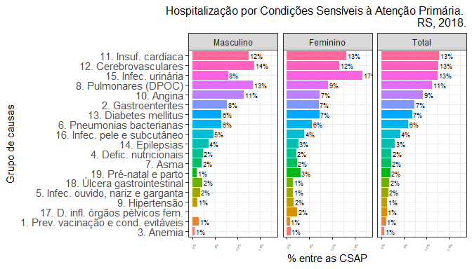
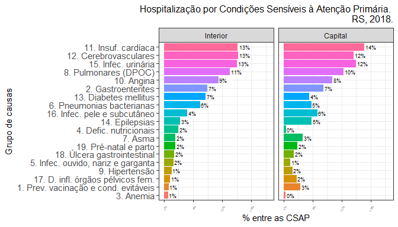

csapAIH: Classificar Condições Sensíveis à Atenção Primária ================ Fúlvio Borges Nedel Atualizado em 16 de fevereiro de 2025
- Apresentação
- Justificativa
- Instalação
- Conteúdo (timeline)
- Dependências
- Exemplos de uso
- Agradecimentos
- Referências
No SourceForge: 

Pacote em R para a classificação de códigos da CID-10 (Classificação Internacional de Doenças, 10ª Revisão) segundo a Lista Brasileira de Internações por Condições Sensíveis à Atenção Primária (ICSAP). É particularmente voltado ao trabalho com as bases de dados do Sistema de Informações Hospitalares do SUS, o Sistema Único de Saúde brasileiro. Tais bases (BD-SIH/SUS) contêm os “arquivos da AIH” (RD??????.DBC), que podem ser expandidos para o formato DBF (RD??????.DBF), com as informações de cada hospitalização ocorrida pelo SUS num período determinado. Assim, embora o pacote permita a classificação de qualquer listagem de códigos da CID-10, tem também algumas funcionalidades para facilitar o trabalho com os “arquivos da AIH” e, atualmente, do Sistema de Informações sobre Mortalidade (SIM). Inclui ainda as estimativas e contagens populacionais por sexo e faixa etária para os municípios brasileiros, de 2012 a 2024.
Justificativa
A hospitalização por CSAP é um indicador da efetividade do sistema de saúde em sua primeira instância de atenção, uma vez que a internação por tais condições —pneumonia, infecção urinária, sarampo, diabetes etc.— só acontecerá se houver uma falha do sistema nesse âmbito de atenção, seja por não prevenir a ocorrência da doença (caso das doenças evitáveis por vacinação, como o sarampo), não diagnosticá-la ou tratá-la a tempo (como na pneumonia ou infeccão urinária) ou por falhar no seu controle clínico (como é o caso da diabete). (Nedel et al. 2011)
O Ministério da Saúde brasileiro estabeleceu em 2008, após amplo processo de validação, uma lista com várias causas de internação hospitalar consideradas CSAP, definindo em portaria a Lista Brasileira. (Brasil. Ministério da Saúde. Secretaria de Atenção à Saúde 2008; Alfradique et al. 2009) A Lista envolve vários códigos da CID-10 e classifica as CSAP em 19 subgrupos de causa, o que torna complexa e trabalhosa a sua decodificação. Há alguns anos o Departamento de Informática do SUS (DATASUS) incluiu em seu excelente programa de tabulação de dados TabWin a opção de tabulação por essas causas, apresentando sua frequência segundo a tabela definida pelo usuário.
Entretanto, muitas vezes a pesquisa exige a classificação de cada internação individual como uma variável na base de dados. (Nedel et al. 2008) E não conheço outro programa ou script (além do que tive de escrever em minha tese (Nedel 2009)) que automatize esse trabalho.
Instalação
O pacote csapAIH pode ser instalado no R de diferentes maneiras:
baixando o arquivo de instalação no SourceForge e depois instalando, com a IDE de preferência ou com o comando
install.packages("csapAIH_<versão>.tar.gz")(em Linux ou Mac) ouinstall.packages("csapAIH_<versão>.zip")(em Windows);com a função
install.packages()sobre o arquivo tar.gz no SourceForge 1:
install.packages("https://sourceforge.net/projects/csapaih/files/csapAIH_0.0.4.5.tar.gz/download", type = "source", repos = NULL) ou
- através do pacote
remotessobre os arquivos-fonte da versão em desenvolvimento, no GitHub:
# install.packages("remotes") # desnecessário se o pacote já estiver instalado
remotes::install_github("fulvionedel/csapAIH")Conteúdo (timeline)
Na sua primeira versão (Nedel 2017), o pacote csapAIH continha apenas uma função, homônima: csapAIH.
Na versão 0.0.2, foram acrescentadas as funções descreveCSAP, desenhaCSAP e nomesgruposCSAP, para a representação gráfica e tabular das CSAP pela lista brasileira. Esta versão também permite a leitura de arquivos da AIH em formato .DBC, sem necessidade de prévia expansão a .DBF. Isso é possível pelo uso do pacote read.dbc, de Daniela Petruzalek (https://cran.r-project.org/web/packages/read.dbc/index.html).
A partir da versão 0.0.3 (Nedel 2019), a função desenhaCSAP permite o detalhamento do gráfico por categorias de outros fatores do banco de dados, com o uso das funções facet_wrap() e facet_grid(), de ggplot2, e permite ainda o desenho de gráficos com as funções básicas, sem a instalação do pacote ggplot2. Foi ainda criada uma função para o cálculo da idade nos arquivos da AIH: a função idadeSUS é usada internamente por csapAIH e pode ser chamada pelo usuário para calcular a idade sem a necessidade de classificar as CSAP.
Na versão 0.0.4, a função csapAIH oferece a opção de classificação das CSAP em 20 grupos de causa, conforme proposto no processo de construção da Lista Brasileira (Alfradique et al. 2009). Essa é a lista sugerida pela Organização Panamericana da Saúde (Organización Panamericana de la Salud (OPS) 2014). As funções desenhaCSAP e tabCSAP têm um argumento para seleção do idioma dos nomes de grupos, em português (pt, padrão), espanhol (es) ou inglês (en). Foram criadas as funções ler_popbr e popbr2000_2021 (esta sobre o pacote brpop de R. Saldanha (2022)) para acesso às estimativas populacionais publicadas pelo DATASUS e funções para categorização da idade em faixas etárias. Foi ainda criada uma função (fetchcsap) a partir da função fetchdatasus do pacote microdatasus(R. de F. Saldanha, Bastos, and Barcellos 2019), para ler os arquivos no site FTP do DATASUS e classificar as CSAP em um único comando. Foram criadas outras funções para facilitar o manejo e apresentação de dados em estudos ecológicos, como a categorização da idade em faixas etárias (fxetar_quinq e fxetar3g) e a identificação dos diagnósticos de parto (partos), particularmente para o Brasil e os arquivos do DATASUS, como a listagem das Unidades da Federação do país (ufbr) e a lista de procedimentos obstétricos em internações por eventos não mórbidos (procobst). A v0.0.4.5 corrige um erro introduzido na v0.0.4.4 em csapAIH, em que a variável csap registrava todos os casos como “não” (embora estivessem classificados corretamente na variável grupo). A v0.0.4.6 corrige um erro em ler_popbr e, principalmente, acrescenta a possibilidade de leitura dos arquivos com as estimativas populacionais atualizadas após o Censo 2022 do IBGE, além de incluir novas possiblidades em nomesgruposCSAP.
A ajuda sobre o pacote oferece mais detalhes sobre as funções e seu uso. Veja no manual ou, no R, com ?'csapAIH-package'.
Dependências
A leitura de arquivos .DBC exige a instalação prévia do pacote read.dbc (Petruzalek 2016). Sua falta não impede o funcionamento das demais funções do pacote (inclusive de leitura de arquivos em outro formato). Da mesma forma, popbr2000_2021 exige a instalação do pacotebrpop e fetchcsap exige a instalação do pacote microdatasus.
A função desenhaCSAP tem melhor desempenho com o pacote ggplot2 instalado, mas sua instalação não é necessária para que ela funcione.
A função popbr2000_2021 usa o pacote dplyr, que é importado. O pacote haven também é importado. A partir da v0.0.4.4 Hmisc não é mais.
Exemplos de uso
Classificação da causa (código CID-10)
Em arquivos de dados
É possível classificar as CSAP diretamente a partir de arquivos com extensão .DBC, .DBF, ou .CSV, sem necessidade da leitura prévia dos dados. Para outras extensões de arquivo é necessária a prévia importação dos dados para um objeto de classe data.frame.
Arquivos do DATASUS
Através de seu site FTP, o DATASUS disponibiliza dados de diferentes Sistemas de Informação em Saúde do SUS, em arquivos comprimidos de extensão DBC. Os arquivos podem ser baixados na página de transferência de arquivos do DATASUS e expandidos para DBF ou CSV (entre várias outras possibilidades de manejo) pelo TabWin, disponível na mesma página. Graças ao pacote read.dbc, de Daniela Petruzalek, também podemos ler os arquivos comprimidos do DATASUS no R, e graças ao pacote microdatasus, de Raphael Saldanha (R. de F. Saldanha, Bastos, and Barcellos 2019), podemos ler com facilidade esses arquivos na internet, sem necessidade de download.
O código abaixo cria um banco com as informações das AIHs do “ano de competência” 2021 ocorridas no RS e outro com as informações das Declarações de Óbito (DO) de residentes no RS ocorridas em 2021:
# remotes::install_github("rfsaldanha/microdatasus") # desnecessário se o pacote estiver instalado
AIHRS2021 <- microdatasus::fetch_datasus(year_start = 2021, 1, 2021, 12, uf = "RS",
information_system = "SIH-RD")
nrow(AIHRS2021) |> Rcoisas::formatL(digits = 0) # linhas
[1] "709.893"
ncol(AIHRS2021) # colunas
[1] 113
DORS2021 <- microdatasus::fetch_datasus(year_start = 2021, year_end = 2021, uf = "RS",
information_system = "SIM-DO")
nrow(DORS2021) |> Rcoisas::formatL(digits = 0)
[1] "117.722"
ncol(DORS2021)
[1] 87Se o arquivo de dados estiver armazenado no computador, basta digitar, entre aspas, o nome do arquivo — com o “path” se o arquivo estiver em diretório diferente daquele da sessão de trabalho ativa (neste exemplo, num sub-diretório do diretório de trabalho da sessão ativa, chamado ‘data-raw’).
csap.dbc <- csapAIH("data-raw/RDRS1801.dbc")
Importados 60.529 registros.
Excluídos 8.240 (13,6%) registros de procedimentos obstétricos.
Excluídos 366 (0,6%) registros de AIH de longa permanência.
Exportados 51.923 (85,8%) registros.
csap.dbf <- csapAIH("data-raw/RDRS1801.dbf")
Importados 60.529 registros.
Excluídos 8.240 (13,6%) registros de procedimentos obstétricos.
Excluídos 366 (0,6%) registros de AIH de longa permanência.
Exportados 51.923 (85,8%) registros.- No caso de arquivos CSV é mandatório indicar o tipo de separador de campos, com o argumento
sep.
csap.csv <- csapAIH("data-raw/RDRS1801.csv", sep = ",")
Importados 60.529 registros.
Excluídos 8.240 (13,6%) registros de procedimentos obstétricos.
Excluídos 366 (0,6%) registros de AIH de longa permanência.
Exportados 51.923 (85,8%) registros.A função fetchcsap foi pensada para apresentar um extrato dos registros por período de internação e não de “competência” da AIH, que é commo se organizam os arquivos de dados. Assim, precisamos modificar alguns argumentos para ter os mesmos registros:
csap.ftp <- fetchcsap('RS', 2018, mesfim = 1, anofim = 2018, periodo = "competencia")
ℹ Your local Internet connection seems to be ok.
ℹ DataSUS FTP server seems to be up and reachable.
ℹ Starting download...
Importados 60.529 registros.
Excluídos 8.240 (13,6%) registros de procedimentos obstétricos.
Excluídos 366 (0,6%) registros de AIH de longa permanência.
Exportados 51.923 (85,8%) registros.Os extratos são iguais:
all.equal(attributes(csap.dbc)$resumo, attributes(csap.dbf)$resumo)
[1] TRUE
all.equal(attributes(csap.dbc)$resumo, attributes(csap.csv)$resumo)
[1] TRUE
all.equal(attributes(csap.ftp)$resumo, attributes(csap.dbc)$resumo)
[1] TRUEMas em estudos epidemiológicos geralmente nos interessa delimitar a população pela data de internação, o que exige trabalho posterior à leitura do arquivo “RD”, pois o arquivo de um determinado mês e ano de “competência” pode conter registros de internações ocorridas em outro momento. Vemos abaixo que a data de internação nos objetos criados anteriormente (a partir de “RDRS1801.dbc”) varia de 01ago2017 a 31out2017. Além disso, o arquivo pode não conter o registro de todas as internações ocorridas naquele mês.
Por isso fetchcsap tem seus argumentos de forma a devolver o banco de dados apenas com os registros do período de interesse. Veja a seguir o resultado com as internações não-obstétricas para jan2018 segundo a seleção dos registros: a. todos daquele mês de competência (mesmo comando anterior para a construção de csap.ftp”); b. apenas as internações ocorridas no mesmo mês de competência da AIH; e c. apenas as internações ocorridas em jan2018 e registradas nor arquivos “RD” dos meses de competência janeiro a fevereiro de 20018.
a <- fetchcsap('RS', 2018, mesfim = 1, anofim = 2018, periodo = "c")
ℹ Your local Internet connection seems to be ok.
ℹ DataSUS FTP server seems to be up and reachable.
ℹ Starting download...
Importados 60.529 registros.
Excluídos 8.240 (13,6%) registros de procedimentos obstétricos.
Excluídos 366 (0,6%) registros de AIH de longa permanência.
Exportados 51.923 (85,8%) registros.
nrow(a)
[1] 51923
summary(a$data.inter)
Min. 1st Qu. Median Mean 3rd Qu. Max.
"2017-06-06" "2017-12-08" "2017-12-28" "2017-12-20" "2018-01-10" "2018-01-31"
b <- fetchcsap('RS', 2018, mesfim = 1, anofim = 2018)
ℹ Your local Internet connection seems to be ok.
ℹ DataSUS FTP server seems to be up and reachable.
ℹ Starting download...
Importados 29.086 registros.
Excluídos 5.005 (17,2%) registros de procedimentos obstétricos.
Excluídos NA (NA%) registros de AIH de longa permanência.
Exportados 24.081 (82,8%) registros.
nrow(b)
[1] 24081
summary(b$data.inter)
Min. 1st Qu. Median Mean 3rd Qu. Max.
"2018-01-01" "2018-01-05" "2018-01-11" "2018-01-12" "2018-01-18" "2018-01-31"
c <- fetchcsap('RS', 2018, mesfim = 2, anofim = 2018)
ℹ Your local Internet connection seems to be ok.
ℹ DataSUS FTP server seems to be up and reachable.
ℹ Starting download...
Importados 75.818 registros.
Excluídos 12.363 (16,3%) registros de procedimentos obstétricos.
Excluídos 164 (0,2%) registros de AIH de longa permanência.
Exportados 63.291 (83,5%) registros.
nrow(c)
[1] 63291
summary(c$data.inter)
Min. 1st Qu. Median Mean 3rd Qu. Max.
"2018-01-01" "2018-01-11" "2018-01-23" "2018-01-24" "2018-02-05" "2018-02-28"
# Limpar o ambiente de trabalho, renomear um dos bancos de dados:
csap <- csap.ftp
rm(csap.csv, csap.dbc, csap.dbf, csap.ftp)Em um banco de dados existente na sessão de trabalho
Com a estrutura dos arquivos da AIH
read.csv("data-raw/RDRS1801.csv") |> # criar o data.frame
csapAIH() |>
glimpse()
Importados 60.529 registros.
Excluídos 5.044 (8,3%) registros de procedimentos obstétricos.
Excluídos 366 (0,6%) registros de AIH de longa permanência.
Exportados 55.119 (91,1%) registros.
Rows: 55,119
Columns: 16
$ n.aih <chr> "4318100063695", "4318100349508", "4318100349563", "4318100…
$ munres <int> 431340, 430450, 430450, 430450, 430450, 430450, 430450, 430…
$ munint <int> 431080, 430450, 430450, 430450, 430450, 430450, 430450, 430…
$ sexo <fct> masc, fem, fem, fem, masc, masc, masc, masc, fem, masc, fem…
$ nasc <date> 55633-04-16, 56511-08-19, 56537-12-10, 56292-01-04, 55005-…
$ idade <dbl> 58, 25, 24, 33, 80, 69, 50, 58, 70, 69, 88, 61, 26, 42, 67,…
$ fxetar.det <fct> 55-59, 25-29, 20-24, 30-34, 80 e +, 65-69, 50-54, 55-59, 70…
$ fxetar5 <fct> 55-59, 25-29, 20-24, 30-34, 80 e +, 65-69, 50-54, 55-59, 70…
$ csap <chr> "não", "não", "não", "não", "sim", "sim", "não", "não", "si…
$ grupo <fct> no-CSAP, no-CSAP, no-CSAP, no-CSAP, g12, g03, no-CSAP, no-C…
$ cid <chr> "K439", "O628", "O641", "O623", "I64", "D500", "I408", "T63…
$ proc.rea <int> 407040064, 411010034, 411010034, 303100044, 303040149, 3030…
$ data.inter <date> 57221-04-11, 57221-03-29, 57221-04-08, 57221-04-08, 57221-…
$ data.saida <date> 57221-04-13, 57221-03-31, 57221-04-10, 57221-04-09, 57221-…
$ cep <int> 93544360, 96600000, 96600000, 96600000, 96600000, 96600000,…
$ cnes <int> 2232189, 2232928, 2232928, 2232928, 2232928, 2232928, 22329…Sem o padrão dos arquivos da AIH
Mude o argumento sihsus para FALSE e indique no argumento cid qual variável contém os códigos diagnósticos. As variáveis csap e grupo (se csapAIH(..., grupos = TRUE, ...)) são acrescentadas ao final do banco de dados alvo da função.
A Encuesta de Egresos Hospitalarios do Equador.
data("eeh20") # Amostra da "Encuesta de egresos hospitalarios" do Equador, ano 2020
names(eeh20) # Os nomes das variáveis
[1] "prov_ubi" "cant_ubi" "parr_ubi" "area_ubi" "clase"
[6] "tipo" "entidad" "sector" "mes_inv" "nac_pac"
[11] "cod_pais" "nom_pais" "sexo" "cod_edad" "edad"
[16] "etnia" "prov_res" "area_res" "anio_ingr" "mes_ingr"
[21] "dia_ingr" "fecha_ingr" "anio_egr" "mes_egr" "dia_egr"
[26] "fecha_egr" "dia_estad" "con_egrpa" "esp_egrpa" "cau_cie10"
[31] "cant_res" "parr_res" "causa3" "cap221rx" "cau221rx"
[36] "cau298rx" A variável cau_cie10 (posição 30) tem o código do diagnóstico de internação. A função csapAIH acrescenta à base duas (se grupo == TRUE) variáveis, csap e grupo, dispostas nas últimas colunas (posição e respectivamente.)
csap.eeh20 <- csapAIH(eeh20, sihsus = FALSE, cid = cau_cie10)
Importados 1.000 registros.
Excluídos 150 registros de parto (15% do total).
names(csap.eeh20)
[1] "prov_ubi" "cant_ubi" "parr_ubi" "area_ubi" "clase"
[6] "tipo" "entidad" "sector" "mes_inv" "nac_pac"
[11] "cod_pais" "nom_pais" "sexo" "cod_edad" "edad"
[16] "etnia" "prov_res" "area_res" "anio_ingr" "mes_ingr"
[21] "dia_ingr" "fecha_ingr" "anio_egr" "mes_egr" "dia_egr"
[26] "fecha_egr" "dia_estad" "con_egrpa" "esp_egrpa" "cau_cie10"
[31] "cant_res" "parr_res" "causa3" "cap221rx" "cau221rx"
[36] "cau298rx" "csap" "grupo"
csap.eeh20[c(30,37:38)] |>
head(3)
cau_cie10 csap grupo
1 C169 não no-CSAP
2 U072 não no-CSAP
3 A090 sim g02A Declaração de Óbito (DO) do SIM
A variável CAUSABAS tem o código da causa básica do óbito.
De modo semelhante à AIH, as bases de dados da DO também têm a idade codificada e não a verdadeira idade da pessoa. Por exemplo, a variável IDADE em DORS2021 é um factor com 0 níveis, em que o primeiro é e o último é . Neste caso podemos usar a função idadeSUS para computar a idade, mas como o resultado de idadeSUS é “um objeto da classe data frame com três variáveis” (v. ?idadeSUS), necessitamos a função unnest (de tidyr) para desagrupar as variáveis antes de inseri-las em DORS2021. Além disso, foi excluída (com unnest(...)[-2]) a “faixa etária detalhada”, que é a segunda variável no output de idadeSUS.
DORS2021 <- DORS2021 %>%
csapAIH(sihsus = FALSE, cid = CAUSABAS, parto.rm = FALSE) %>%
mutate(tidyr::unnest(idadeSUS(DORS2021, sis = "SIM"), cols = c())[-2],
fxetar3 = fxetar3g(idade),
SEXO = factor(SEXO, levels = c(1,2), labels = c("masc", "fem")))
Importados 117.722 registros.
DORS2021[1:3, (ncol(DORS2021)-5):ncol(DORS2021)]
CONTADOR csap grupo idade fxetar5 fxetar3
1 1 não no-CSAP 49 45-49 15-59
2 2 não no-CSAP 41 40-44 15-59
3 3 não no-CSAP 78 75-79 60e+A partir de uma variável com códigos da CID-10:
cids <- aih100$DIAG_PRINC[1:10]
cids
[1] N189 O689 S423 H938 P584 I200 I442 C189 C409 K818
3254 Levels: A009 A020 A044 A045 A048 A049 A050 A058 A059 A061 A069 A071 ... Z990
csapAIH(cids)
Excluídos 0 registros de parto (0% do total).
cid csap grupo
1 N189 não no-CSAP
2 O689 não no-CSAP
3 S423 não no-CSAP
4 H938 não no-CSAP
5 P584 não no-CSAP
6 I200 sim g10
7 I442 não no-CSAP
8 C189 não no-CSAP
9 C409 não no-CSAP
10 K818 não no-CSAPApresentação de resultados
Resumo de importação de dados
Um resumo de importação, apresentado durante a realização do trabalho, é guardado como atributo do banco de dados e pode ser recuperado com as funções attr() ou attributes():
attr(csap, "resumo")
acao freq perc objeto
1 Importados 60529 100.0 registros.
2 Excluídos \t 8240 13.6 registros de procedimentos obstétricos.
3 Excluídos \t 366 0.6 registros de AIH de longa permanência.
4 Exportados 51923 85.8 registros.
# attributes(csap)$resumoEm tabela para apresentação:
attributes(csap)$resumo |>
knitr::kable(format.args = c(big.mark = ".", decimal.mark = ","),
col.names = c("Ação", "N", "%", "Objeto") ) |>
suppressWarnings()| Ação | N | % | Objeto |
|---|---|---|---|
| Importados | 60.529 | 100,0 | registros. |
| Excluídos | 8.240 | 13,6 | registros de procedimentos obstétricos. |
| Excluídos | 366 | 0,6 | registros de AIH de longa permanência. |
| Exportados | 51.923 | 85,8 | registros. |
Tabela “bruta”
A função descreveCSAP gera, a partir de um comando muito simples, uma tabela pronta para apresentação, com as frequências brutas e absolutas das CSAP por grupo de causa.
descreveCSAP(csap)
Grupo Casos %Total %CSAP
1 1. Prev. vacinação e cond. evitáveis 116 0,22 1,07
2 2. Gastroenterites 802 1,54 7,38
3 3. Anemia 73 0,14 0,67
4 4. Defic. nutricionais 241 0,46 2,22
5 5. Infec. ouvido, nariz e garganta 168 0,32 1,55
6 6. Pneumonias bacterianas 653 1,26 6,01
7 7. Asma 234 0,45 2,15
8 8. Pulmonares (DPOC) 1.213 2,34 11,17
9 9. Hipertensão 147 0,28 1,35
10 10. Angina 1.005 1,94 9,25
11 11. Insuf. cardíaca 1.394 2,68 12,83
12 12. Cerebrovasculares 1.373 2,64 12,64
13 13. Diabetes mellitus 743 1,43 6,84
14 14. Epilepsias 331 0,64 3,05
15 15. Infec. urinária 1.360 2,62 12,52
16 16. Infec. pele e subcutâneo 459 0,88 4,23
17 17. D. infl. órgãos pélvicos fem. 133 0,26 1,22
18 18. Úlcera gastrointestinal 195 0,38 1,80
19 19. Pré-natal e parto 222 0,43 2,04
20 Total CSAP 10.862 20,92 100
21 no-CSAP 41.061 79,08 --
22 Total de internações 51.923 100 --Tabela para apresentação
descreveCSAP(csap) |>
knitr::kable(align = c('l', rep('r', 3)))| Grupo | Casos | %Total | %CSAP |
|---|---|---|---|
| 1. Prev. vacinação e cond. evitáveis | 116 | 0,22 | 1,07 |
| 2. Gastroenterites | 802 | 1,54 | 7,38 |
| 3. Anemia | 73 | 0,14 | 0,67 |
| 4. Defic. nutricionais | 241 | 0,46 | 2,22 |
| 5. Infec. ouvido, nariz e garganta | 168 | 0,32 | 1,55 |
| 6. Pneumonias bacterianas | 653 | 1,26 | 6,01 |
| 7. Asma | 234 | 0,45 | 2,15 |
| 8. Pulmonares (DPOC) | 1.213 | 2,34 | 11,17 |
| 9. Hipertensão | 147 | 0,28 | 1,35 |
| 10. Angina | 1.005 | 1,94 | 9,25 |
| 11. Insuf. cardíaca | 1.394 | 2,68 | 12,83 |
| 12. Cerebrovasculares | 1.373 | 2,64 | 12,64 |
| 13. Diabetes mellitus | 743 | 1,43 | 6,84 |
| 14. Epilepsias | 331 | 0,64 | 3,05 |
| 15. Infec. urinária | 1.360 | 2,62 | 12,52 |
| 16. Infec. pele e subcutâneo | 459 | 0,88 | 4,23 |
| 17. D. infl. órgãos pélvicos fem. | 133 | 0,26 | 1,22 |
| 18. Úlcera gastrointestinal | 195 | 0,38 | 1,80 |
| 19. Pré-natal e parto | 222 | 0,43 | 2,04 |
| Total CSAP | 10.862 | 20,92 | 100 |
| no-CSAP | 41.061 | 79,08 | – |
| Total de internações | 51.923 | 100 | – |
Entretanto, ao transformar os valores para o formato latino, sua classe se transforma em character e assim é impossível realizar cálculos com esse output. Além disso, não serve para publicações em inglês. Por isso a função descreveCSAP permanecerá no pacote mas seu desenvolvimento seguirá em outra função, agora de nome tabCSAP. Nessa nova função, a apresentação de uma tabela formatada se faz a partir do argumento format = TRUE. Por padrão esse argumento é FALSE, o que permite operações matemáticas com os valores da tabela (um data.frame, na verdade), como veremos em seguida.
A função tabCSAP permite também a apresentação da tabela em inglês ou espanhol, através do argumento lang:
tabCSAP(csap$grupo, digits = 1, lang = "en", format = T) |>
knitr::kable(align = c('l', rep('r', 3)))| Group | Cases | Total % | ACSC % |
|---|---|---|---|
| 1. Vaccine prev. and amenable cond. | 116 | 0.2 | 1.1 |
| 2. Gastroenteritis | 802 | 1.5 | 7.4 |
| 3. Anemia | 73 | 0.1 | 0.7 |
| 4. Nutritional deficiency | 241 | 0.5 | 2.2 |
| 5. Ear, nose and throat infec. | 168 | 0.3 | 1.5 |
| 6. Bacterial pneumonia | 653 | 1.3 | 6.0 |
| 7. Asthma | 234 | 0.5 | 2.2 |
| 8. Pulmonary (COPD) | 1,213 | 2.3 | 11.2 |
| 9. Hypertension | 147 | 0.3 | 1.4 |
| 10. Angina | 1,005 | 1.9 | 9.3 |
| 11. Heart failure | 1,394 | 2.7 | 12.8 |
| 12. Cerebrovascular | 1,373 | 2.6 | 12.6 |
| 13. Diabetes mellitus | 743 | 1.4 | 6.8 |
| 14. Convulsions and epilepsy | 331 | 0.6 | 3.0 |
| 15. Urinary infection | 1,360 | 2.6 | 12.5 |
| 16. Skin and subcutaneous infec. | 459 | 0.9 | 4.2 |
| 17. Pelvic inflammatory disease | 133 | 0.3 | 1.2 |
| 18. Gastrointestinal ulcers | 195 | 0.4 | 1.8 |
| 19. Pre-natal and childbirth | 222 | 0.4 | 2.0 |
| ACSC | 10,862 | 20.9 | 100 |
| Non ACSC | 41,061 | 79.1 | – |
| TOTAL hospitalizations | 51,923 | 100 | – |
tabCSAP(csap$grupo, digits = 1, lang = "es", format = T) |>
knitr::kable(align = c('l', rep('r', 3)))| Grupo | Casos | % Total | % CSAP |
|---|---|---|---|
| 1. Prev. vacunación y otros medios | 116 | 0,2 | 1,1 |
| 2. Gastroenteritis | 802 | 1,5 | 7,4 |
| 3. Anemia | 73 | 0,1 | 0,7 |
| 4. Def. nutricionales | 241 | 0,5 | 2,2 |
| 5. Infec. oído, nariz y garganta | 168 | 0,3 | 1,5 |
| 6. Neumonía bacteriana | 653 | 1,3 | 6,0 |
| 7. Asma | 234 | 0,5 | 2,2 |
| 8. Enf. vías respiratorias inferiores | 1.213 | 2,3 | 11,2 |
| 9. Hipertensión | 147 | 0,3 | 1,4 |
| 10. Angina de pecho | 1.005 | 1,9 | 9,3 |
| 11. Insuf. cardíaca congestiva | 1.394 | 2,7 | 12,8 |
| 12. Enf. cerebrovasculares | 1.373 | 2,6 | 12,6 |
| 13. Diabetes mellitus | 743 | 1,4 | 6,8 |
| 14. Epilepsias | 331 | 0,6 | 3,0 |
| 15. Infección urinaria | 1.360 | 2,6 | 12,5 |
| 16. Infec. piel y subcutáneo | 459 | 0,9 | 4,2 |
| 17. Enf infl órganos pélvicos femeninos | 133 | 0,3 | 1,2 |
| 18. Úlcera gastrointestinal | 195 | 0,4 | 1,8 |
| 19. Enf. del embarazo, parto y puerperio | 222 | 0,4 | 2,0 |
| Total CSAP | 10.862 | 20,9 | 100 |
| No-CSAP | 41.061 | 79,1 | – |
| Total de ingresos | 51.923 | 100 | – |
Finalmente, vimos que a função tabCSAP permite ainda a apresentação da lista em 20 grupos de causa. Assim, se as CSAP foram classificadas em 20 grupos – usando, por exemplo o argumento lista = "Alfradique" em csapAIH() –, essa tabela deve ser apresentada com tabCSAP e não com descreveCSAP. Note ainda que, à diferença de descreveCSAP, tabCSAP exige o nome da variável com o grupo de causas.
listaOPS <- csapAIH(AIHRS2021, lista = "Alfradique")
Importados 709.893 registros.
Excluídos 88.345 (12,4%) registros de procedimentos obstétricos.
Excluídos 4.121 (0,6%) registros de AIH de longa permanência.
Exportados 617.427 (87%) registros.
# descreveCSAP(listaOPS) # Retorna o erro: "O vetor precisa ter os 19 grupos da Lista Brasileira.
# Se essa for a lista 'Alfradique' use 'tabCSAP'.""
tabCSAP(listaOPS$grupo)
grupo casos perctot percsap
1 1. Prev. por vacinação 127 0.02 0.13
2 2. Outras cond. evitáveis 1316 0.21 1.31
3 3. Gastroenterites 4205 0.68 4.20
4 4. Anemia 695 0.11 0.69
5 5. Defic. nutricionais 1765 0.29 1.76
6 6. Infec. ouvido, nariz e garganta 954 0.15 0.95
7 7. Pneumonias bacterianas 5425 0.88 5.41
8 8. Asma 3443 0.56 3.44
9 9. Pulmonares (DPOC) 11389 1.84 11.36
10 10. Hipertensão 1247 0.20 1.24
11 11. Angina 8421 1.36 8.40
12 12. Insuf. cardíaca 14119 2.29 14.09
13 13. Cerebrovasculares 16426 2.66 16.39
14 14. Diabetes mellitus 6784 1.10 6.77
15 15. Epilepsias 3293 0.53 3.29
16 16. Infec. urinária 11092 1.80 11.07
17 17. Infec. pele e subcutâneo 3852 0.62 3.84
18 18. D. infl. órgãos pélvicos fem. 1154 0.19 1.15
19 19. Úlcera gastrointestinal 2261 0.37 2.26
20 20. Pré-natal e parto 2260 0.37 2.25
21 Total CSAP 100228 16.23 100.00
22 No-CSAP 517199 83.77 NA
23 Total de internações 617427 100.00 NACalcular taxas
Exemplo: cálculo das taxas brutas de ICSAP por grupo de causa em Cerro Largo, RS, 2021:
O código IBGE (os seis primeiros dígitos) de Cerro Largo é “430520”.
As ICSAP
Selecionamos as informações sobre residentes de Cerro Largo em nosso banco de dados da AIH em 2021.
A população
Desde que o DATASUS interrompeu a publicação dos arquivos com as estimativas populacionais por sexo e faixa etária para os municípios brasileiros (último arquivo no FTP é da população em 2012), passou a ser necessária a tabulação no TABNET e posterior leitura dos dados no programa de análise. Ano passado (2022) Raphael Saldanha dispôs-se ao trabalho de fazer as muitas tabulações necessárias e nos brindou outro excelente e muito esperado pacote preenchendo essa lacuna: brpop, com as as estimativas da população por sexo e faixa etária para os municípios brasileiros, de 2000 a 2021 (Nota técnica).
Entretanto, as tabelas no pacote brpop têm o total (a soma da população nas diferentes faixas etárias), e os rótulos das faixas etárias são longos e estão em inglês, por isso resolvi criar outra função (popbr2000_2021) que retornasse a população com os rótulos em português e apenas com a população estimada em cada faixa etária (sem o total). Assim, a população estimada para Cerro Largo em 2021 foi capturada com o seguinte comando,
clpop <- csapAIH::popbr2000_2021(2021, munic = "430520")
Setting `max_tries = 2`.
Setting `max_tries = 2`.Com o pacote brpop, teríamos de acrescentar o filtro de exclusão da categoria “Total” na faixa etária e os resultados seriam os mesmos, porém com outra estrutura do objeto e outros rótulos de categorias:
clpop %>%
group_by(fxetar5, sexo) %>%
summarise(pop = sum(pop)) %>%
tidyr::pivot_wider(names_from = sexo, values_from = pop)
`summarise()` has grouped output by 'fxetar5'. You can override using the
`.groups` argument.
# A tibble: 17 × 3
# Groups: fxetar5 [17]
fxetar5 masc fem
<fct> <int> <int>
1 0-4 390 372
2 5-9 408 393
3 10-14 417 344
4 15-19 434 370
5 20-24 493 431
6 25-29 552 503
7 30-34 603 517
8 35-39 572 500
9 40-44 512 450
10 45-49 461 430
11 50-54 463 499
12 55-59 529 486
13 60-64 453 440
14 65-69 348 383
15 70-74 243 308
16 75-79 167 219
17 80 e + 192 361
brpop::mun_sex_pop() %>%
filter(code_muni == "430520", year == 2021, age_group != "Total") %>%
group_by(age_group, sex) %>%
summarise(pop = sum(pop)) %>%
tidyr::pivot_wider(names_from = sex, values_from = pop)
`summarise()` has grouped output by 'age_group'. You can override using the
`.groups` argument.
# A tibble: 17 × 3
# Groups: age_group [17]
age_group Female Male
<chr> <int> <int>
1 From 0 to 4 years 372 390
2 From 10 to 14 years 344 417
3 From 15 to 19 years 370 434
4 From 20 to 24 years 431 493
5 From 25 to 29 years 503 552
6 From 30 to 34 years 517 603
7 From 35 to 39 years 500 572
8 From 40 to 44 years 450 512
9 From 45 to 49 years 430 461
10 From 5 to 9 years 393 408
11 From 50 to 54 years 499 463
12 From 55 to 59 years 486 529
13 From 60 to 64 years 440 453
14 From 65 to 69 years 383 348
15 From 70 to 74 years 308 243
16 From 75 to 79 years 219 167
17 From 80 years or more 361 192A tabela com as taxas
cte <- 1e5
tabCSAP(claih$grupo) %>%
mutate(taxa = casos / sum(clpop$pop)*cte) %>%
knitr::kable(format.args = list(decimal.mark = ",", big.mark = "."), digits = 1,
caption = paste("ICSAP em Cerro Largo, RS, 2021. Taxas por",
Rcoisas::formatL(cte, digits = 0), "hab.")) | grupo | casos | perctot | percsap | taxa |
|---|---|---|---|---|
| 1. Prev. vacinação e cond. evitáveis | 2 | 0,3 | 1,9 | 14,0 |
| 2. Gastroenterites | 6 | 0,8 | 5,6 | 42,1 |
| 3. Anemia | 0 | 0,0 | 0,0 | 0,0 |
| 4. Defic. nutricionais | 0 | 0,0 | 0,0 | 0,0 |
| 5. Infec. ouvido, nariz e garganta | 2 | 0,3 | 1,9 | 14,0 |
| 6. Pneumonias bacterianas | 20 | 2,8 | 18,5 | 140,4 |
| 7. Asma | 1 | 0,1 | 0,9 | 7,0 |
| 8. Pulmonares (DPOC) | 13 | 1,8 | 12,0 | 91,3 |
| 9. Hipertensão | 1 | 0,1 | 0,9 | 7,0 |
| 10. Angina | 3 | 0,4 | 2,8 | 21,1 |
| 11. Insuf. cardíaca | 13 | 1,8 | 12,0 | 91,3 |
| 12. Cerebrovasculares | 7 | 1,0 | 6,5 | 49,1 |
| 13. Diabetes mellitus | 10 | 1,4 | 9,3 | 70,2 |
| 14. Epilepsias | 2 | 0,3 | 1,9 | 14,0 |
| 15. Infec. urinária | 24 | 3,4 | 22,2 | 168,5 |
| 16. Infec. pele e subcutâneo | 4 | 0,6 | 3,7 | 28,1 |
| 17. D. infl. órgãos pélvicos fem. | 0 | 0,0 | 0,0 | 0,0 |
| 18. Úlcera gastrointestinal | 0 | 0,0 | 0,0 | 0,0 |
| 19. Pré-natal e parto | 0 | 0,0 | 0,0 | 0,0 |
| Total CSAP | 108 | 15,3 | 100,0 | 758,3 |
| No-CSAP | 599 | 84,7 | NA | 4.205,6 |
| Total de internações | 707 | 100,0 | NA | 4.963,8 |
ICSAP em Cerro Largo, RS, 2021. Taxas por 100.000 hab.
Gráficos
gr <- desenhaCSAP(csap, titulo = "auto", onde = "RS", quando = 2018, limsup = .18, x.size = 4)
gr
Estratificado por categorias de outra variável presente no banco de dados:
Observe que ao estratificar o gráfico mantém a ordenação por frequência da variável em seu todo, sem a estratificação, quando o argumento ordenar = TRUE(padrão).
rot <- ggplot2::as_labeller(c("masc" = "Masculino", "fem" = "Feminino", "(all)" = "Total"))
gr + ggplot2::facet_grid(~ sexo, margins = TRUE, labeller = rot)
gr + ggplot2::facet_wrap(~ munres == "431490",
labeller = ggplot2::as_labeller(c("FALSE" = "Interior",
"TRUE" = "Capital")))
DORS2021 %>%
filter(!is.na(SEXO), !is.na(idade)) %>%
desenhaCSAP(x.size = 7, y.size = 8) +
ggplot2::facet_grid(SEXO ~ fxetar3)Mortalidade por CSAP por grupos de causa, por sexo e faixa etária. RS, 2021.
Veja o manual do pacote em: https://github.com/fulvionedel/csapAIH/blob/master/docs/csapAIH_0.0.4.5.pdf
Agradecimentos
Agradeço a todxs os usuárixs do pacote, particularmente a quem informa problemas e sugere mudanças, como @laiovictor e @igortadeu @rafadbarros, e (muito!!) a quem apresenta soluções, como @denis-or.
E, sempre, meus profundos agradecimentos a
- Daniela Petruzalek, pelo pacote read.dbc; e
- A Raphael Saldanha, pelos pacotes microdatasus e brpop.